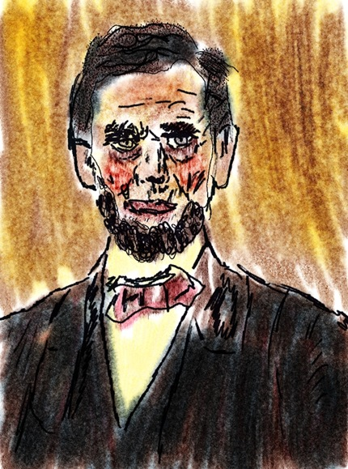

Werewolves in Love
Chapter one. Werewolves in love. It's the love story they told you could never be told. The story nobody wanted to be told. The one your mother warned me about. The story that is here right now. You are reading the story. It's about werewolves in love. Two of them. They love each other so goddamned much they could eat each other. Wait. That's not what happened is it? Because I never heard a story about two werewolves in love before.
Chapter two. Give it up. This is not a real story. Juan was not a werewolf and he didn't love Manila the tan werewolf.
Chapter 3. The end.
Related posts

Dear Stinkbug, I Love You, Now Die
Dear Stinkbug, I do not appreciate coming home to find you on my toothbrush. Since you touched it, I am…

Ghosts Love Frankenstein Monster Pets
Frank9 pet us please!

Flying Werewolves Drag Ass Across the Sky
Still photos of an elusive flying ass dragging werewolf couple in the wild. This romantic couple met for the first…

Love Me Lincoln Newest VH1 Reality Show
‘ Recently re-Animated dead prez Abraham Lincoln is planning on jumping back in the spotlight this spring. In a recent…